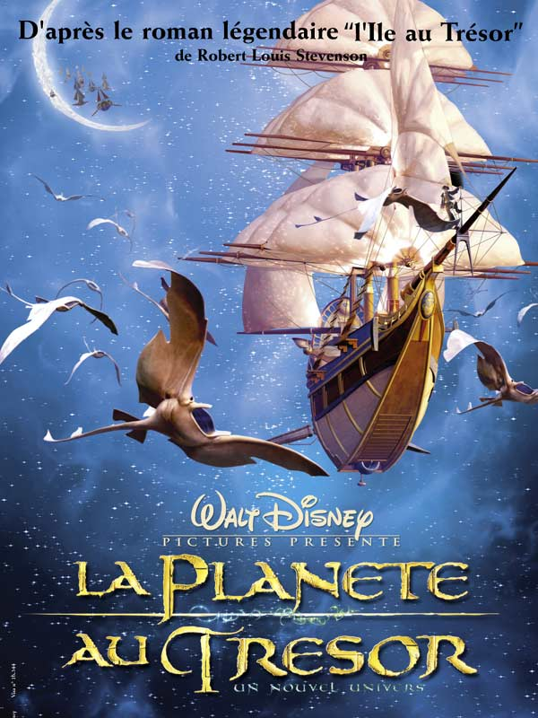

<section class="article-disney-plus py-5">
  <div class="container">
    <div class="row">
      <article class="">
        <h2>La planète au trésor, un nouvel univers</h2>
        <h5>Partez pour une aventure extraordinaire à la recherche du trésor du capitaine Flint</h5>

        <p>
          « La planète au trésor, un nouvel univers » est un long-métrage d’animation des studios Disney et sorti en 2002. Il s’agit de l’adaptation futuriste du roman « L’île au trésor » de Robert Louis Stevenson.
        </p>

        <div class="article_img">
          
        </div>

        <p>
          <strong class="emphase">De quoi ça parle :</strong> Jim Hawkins, jeune adolescent rêve d’aventure depuis petit. Lorsqu’il rencontre un reptile humanoïde gravement blessé et qu’il tente de le sauver, Jim découvre qu’une horde de pirates est à la poursuite de son nouvel ami, qui lui remet un objet en forme de sphère. Bientôt l’adolescent et est obligé de fuir avec sa mère et le docteur Doppler (client de l’auberge familiale et ami) et découvre que l’objet en forme de sphère n’est autre que la carte du « butin de mille univers » du célèbre pirate Capitaine Nathaniel Flint. Le docteur Doppler décide de monter une expédition pour partir à la recherche de ce fabuleux trésor en compagnie de Jim.
        </p>

        <p>

          <strong class="emphase">Mon avis :</strong> Trop méprisé par la critique, ce long-métrage est une merveille visuelle. Les images sont splendides, l’émotion est à son paroxysme et l’intrigue est puissante. Les personnages sont charismatiques et attachants, même les « méchants » arrivent à se faire aimer. Quant à la musique, réalisée par James Newton Howard, elle est des plus magnifiques et donne de la profondeur aux émotions ressenties et envoyées par les personnages. Ce long-métrage est tout simplement … Magique et créatif pour les petits comme pour les grands.
        </p>

        <p>
          <strong class="emphase">Anecdote :</strong> Le compositeur James Newton Howard a voulu rendre hommage aux grands films d’aventure par les compositions de ce long-métrage.
        </p>

        <p>
          Le compositeur James Newton Howard a voulu rendre hommage aux grands films d’aventure par les compositions de ce long-métrage.
        </p>

        <iframe width="560" height="315" src="https://www.youtube.com/embed/0jCCu7ohHno" frameborder="0" allow="accelerometer; autoplay; clipboard-write; encrypted-media; gyroscope; picture-in-picture" allowfullscreen></iframe>

        <p class="signature text-end"><strong>Angèle</strong></p>
      </article>
    </div>
  </div>
</section>
